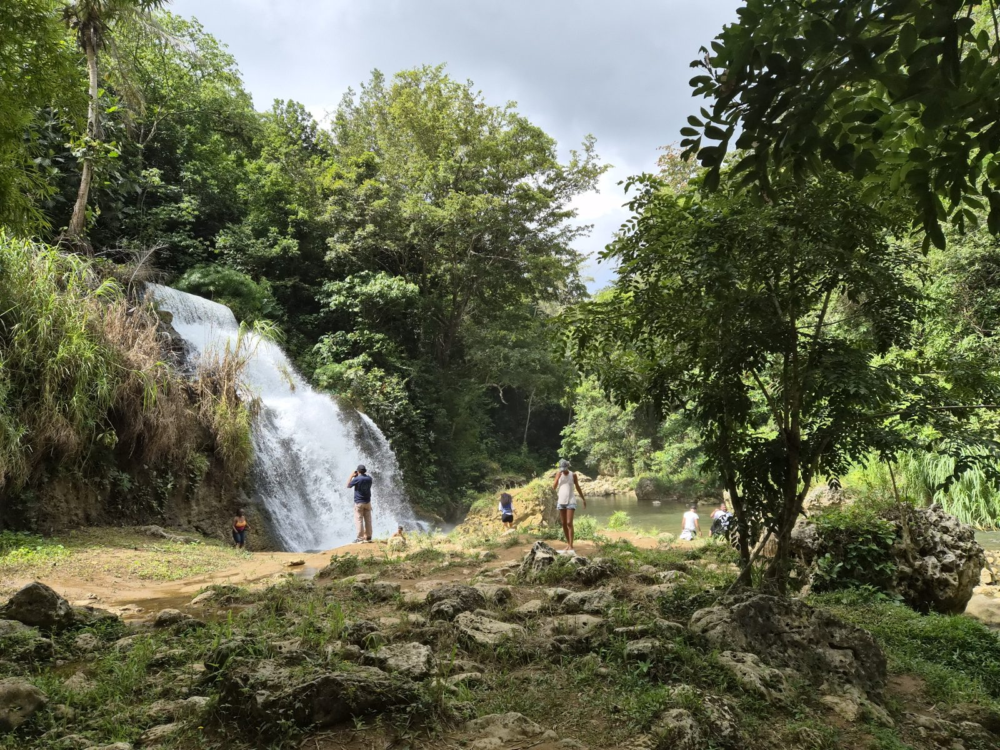

Questions, answered
What to know before you write to us, and what we will ask you in return.
About the days
Is every day private?
It can be. Every day can be booked privately, for your party only with your own host and vehicle, or shared with a small group of travelers. Journeys are always private.
Can we book a single day?
Yes. Every day can be booked on its own or joined into a journey.
What is the difference between a day and a journey?
A day stands on its own: a half day, a full day or an evening. A journey joins two to five days into one trip, in the order that makes sense on the map. Each journey is a starting point; we adjust it to you.
Can a journey be longer than five days?
Yes. Add Slow Water, River & Stone, or a free day between, and we will rebalance the journey around it. Longer stays are designed on request.
How full is each day?
As full as you like. Stay longer where you want to and skip what does not interest you. Tell us whether you prefer slow and easy or full days, and we plan the pace around it. A shared day follows a set plan, paced for the group.
Can a day be adjusted to us?
Yes, on a private day. Stops and meals are chosen for your party, and in Ponce the museum depends on your interests. Tell us what you love and what you would rather skip. A shared day follows a set plan; tell us about any dietary or mobility needs and we arrange for them.
Planning
How do we begin?
Send us a short note with your dates, who is coming and the pace you like, through the planning form or by email. We read it and reply personally, then propose your days.
Which languages do you speak?
English and Spanish. Your host is fluent in both.
How far ahead should we write?
As early as you can. The sooner we know your dates, the easier it is to hold the tables and entrances your days depend on. If your trip is close, write anyway and we will tell you honestly what is still possible.
Where to stay
Do you book our hotel?
No. We recommend places that suit your style and route; you book directly, and we plan the days around it.
Can you recommend where to stay?
Yes. Tell us how you like to stay and which days interest you, and we will suggest places that suit both. Where you sleep shapes the route, so it helps to decide together.
We are moving around the island. Does that work?
Yes. Tell us where you will be each night, and we plan each day to begin where you are staying.
Who it is for
Is it right for children or older travelers?
Yes. The pace is set for your group. San Juan After Dark is for adults only.
Can you host a family across generations, or a group of friends?
Yes. Grandparents, parents and children, or close friends traveling together: everyone stays in one vehicle with one host, and each day is planned so it works for every age. Group size depends on the vehicle, so tell us how many are coming and we will confirm.
Who is San Juan After Dark for?
Adults only. It is an evening in San Juan’s cocktail rooms, and it pairs well with a morning in Old San Juan.
On the day
Where do you pick us up?
On a private day, where you are staying; your host meets you there, and the vehicle is for your party only, from the first stop to the last. On a shared day, pickup is in Old San Juan, Condado or Isla Verde.
What should we bring?
It depends on the day. For River & Stone and Slow Water, bring a swimsuit, a towel and shoes that can get wet. For Old San Juan and Ponce, comfortable shoes for walking. Sun protection and water on every day. If you are unsure, ask us.
What if it rains?
We adjust the order of the day, or the days, so the plan works with the weather. Some rivers and trails close after heavy rain, and we will tell you when that happens.
Can the plan change on the day?
Yes, when the day asks for it. Your host knows which road to take when the plan should change, and reservations are adjusted if the weather asks. We will always tell you what depends on the weather and what we cannot promise.
Booking
How do we book?
Once your days feel right, you reserve online in a few steps, with a clear summary of every day.
How much does it cost?
Prices are shared with your proposal. Each day is designed around your party, so we quote once we know your dates, your group, the days you want and whether you travel privately or shared.
Ask us
Still have a question?
Write to us at lastantilla@gmail.com. We read every note and reply personally.
Or tell us about your trip, and we will answer with your days.
Plan your days
Plan your daysAsk us anything. We would rather you arrive at ease.